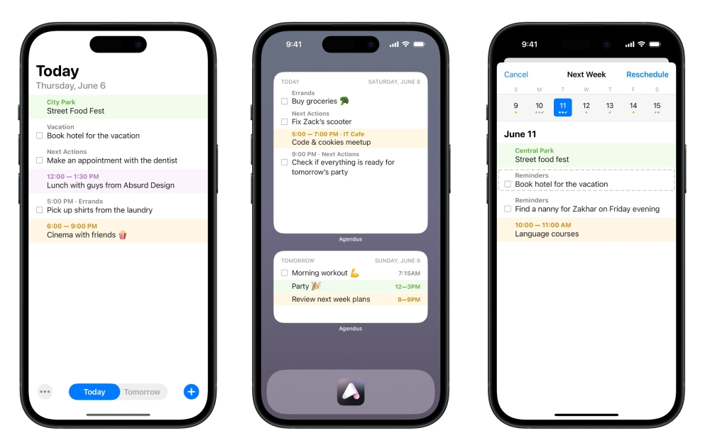

Bluey (2018-)

С большим удовольствием смотрим с мелким очень классный мульт-сериал про детей, родителей и их отношения. И вам рекомендуем)
С большим удовольствием смотрим с мелким очень классный мульт-сериал про детей, родителей и их отношения. И вам рекомендуем)

Не часто встречаются игрушки, которые клево слушать, а еще разглядывать: вот The Cub как раз такая — я бы даже ее чуть попроще еще сделал, да помедленнее, так и хочется залипнуть...
Потребовалось тут немного под веб пописать, сел придумывать схему бд и понял, как я по этому соскучился. Не смог вспомнить, когда последний раз писал SQL запрос! А это же кайф.
На всякий случай, это именно постмортем бизнеса, само приложение доступно в апсторе (совершенно бесплатно), и я планирую, по мере возможности, его обновлять.
Итак, приложение, как мне кажется, получилось неплохое. Не идеальное, есть еще куда его пилить и улучшать, но здорово уже то, что не имея никакого опыта ни в iOS, ни в Swift, ни в SwiftUI (ChatGPT не юзал, ахах), я его довел до релиза.
Однако, бизнеса из этого не вышло. Попробую коротко проговорить почему.
Я наивно предполагал, что "сделаю классную тулзу" и этого будет достаточно для успешной конкуренции с теми продуктами, что уже есть на рынке. Реальность же оказалась такова, что классного продукта недостаточно, более того, есть примеры, когда продукт может быть посредственный, но, тем не менее, его продают и продают хорошо. То есть, в первую очередь, нужно понять как ты продукт будешь продавать.
Почему? Потому что чтобы с кем-то конкурировать, нужно сперва оказаться в равных условиях, а условия изначально не равны — ты появляешься в сторе на позиции в самом конце списка, и тебя просто не найдут, а значит — не скачают, а значит — не купят. При этом, в основном зарабатывают приложения из первой тройки (см. картинку), а те, что ниже, делят между собой остатки, так что находясь на 60-м месте, понятно сколько пользователей ты получишь и сколько на них заработаешь.

В общем, у Агендуса было катастрофически мало пользователей, настолько мало, что даже выводов никаких я не смог сделать. Нельзя сделать никаких выводов на 40 пользователях.
А как увеличить это число? Надо как-то продвигаться, правильно? То есть, это SEO (в случае с апстором — ASO) и реклама. Но и тут есть проблемы. Сегмент Агендуса — таск-менеджеры — очень неспецифичный. Это значит, что нельзя каким-то образом просто понять кому показать рекламу, чтобы от нее оказался максимальный эффект, а это, в свою очередь, значит, что рекламу надо показывать всем, эффектривность у нее будет крайне маленькая, а стоить она будет дорого. Почти такая же история с SEO/ASO — на рынке куча такого софта, и все хотят раскрутиться, чтобы куда-то пролезть нужно как-то выделять ту аудиторию, до которой ты хочешь достучаться, а значит — становиться более специфичным, делать что-то, что не делают другие, причем не в том смысле, что придумать новый удобный UI, а в том, что делать фичи под конаретных людей (например, под людей с ADHD — синдромом дифицита внимания), что в случае с Агендусом превращало его в какое-то совсем другое приложение (в целом, это ок — изменение фокуса/пивот и функциональности после запуска в порядке вещей), но приложение это надо было бы перепридумывать с нуля, а к этому я оказался не готов.
В итоге, я смог сделать продукт инженерно, но не смог сделать его бизнесово, потому что, с точки зрения бизнеса продукт — это не только инженерное решение, но и ценность для пользователей, и получается, что я или не смог до пользователей эту ценность донести, или же она была не настолько привлекательной, чтобы предпочесть мое решение существующим. Лично мне хочется думать, что ценность все же была, однако достаточно специфичная, ахах. И, несмотря на то, что одной стороны это грустно, с другой — было крайне интересно и познавательно всем этим заниматься. То есть, кажется, что это все больше про знания, которые я приобрел в процессе, чем про результат. Есть ощущение, что именно наличие этих знаний повышает вероятность успеха в дальнейшем, так что делайте, что — не так важно, главное — делайте.
Если вдруг собираетесь что-то мутить в одно лицо, то есть очень хорошая, хотя и не очень свежая (но тем не менее, все еще очень релевантная) книжка — Start small, stay small, которую крайне рекомендую.
Теперь еще совсем галопом из того, с чем столкнулся:
Как-то так.
p.s. Если вы обладатель российского паспорта, то нужно учитывать, что только организационная часть может занять существенное время, поэтому стоит начинать ее как можно раньше. К примеру, у эппла много чего, относящегося к бизнесу, делается в ручном режиме. Готовьтесь к тому, что даже просто оплата дев аккаунта может потребовать неделю на процессинг, а-то и созвона с командой поддержки. Ну и я не говорю уже про открытие счета в банке. В общей сложности, я потратил на всю эту возню пару месяцев.
Оставлю тут себе скриншот Агендуса на память.

Кстати, Return of the Obra Dinn получила в 2019 Seumas McNally Grand Prize. Так что если хочется поиграть во что-то и не знаете во что, то можно начать с этого списка.
Так получилось, что я иногда во что-то играю. Но я не геймер, зацепить меня сложно, поэтому играю я не часто. И еще реже встречаются игры, про которые хочется рассказать.
Return of the Obra Dinn из этого короткого списка.
По сути — это квест. Или даже не квест, а паззл. Или, и то, и другое.
Смысл игры состоит в том, что вам нужно идентифицировать пропавших членов команды парусного судна Восточно-Индийской компании. Судно пришло, и кроме пары истлевших скелетов, на нем ничего нет, и вас нанимают выяснить, что же, черт побери, на нем произошло.
Из артефактов в вашем распоряжении — несколько зарисовок команды судовым художником, карта маршрута и сам корабль. Только с этими артефактами каши не сваришь, поэтому бонусом ко всему этому вам даются часы, которые могут переносить вас в определенные сцены по пути следования судна. Или не сцены, а снепшоты. Снепшоты, потому что они полностью статичны, несмотря на то, что вы можете по ним в определенных пределах перемещаться, "проваливаясь" все раньше и раньше во времени. А из-за того, как выбраны эти моменты, а еще потому, что каждый такой момент сопровождается коротким аудио фрагментом, часто содержащим обрывок разговора его участников, каждая такая статическая сцена "оживает" в вашем воображении (а если вспомнить сеттинг, то становится понятно, что моменты эти зачастую крайне драматичны).
В общем, Return of the Obra Dinn — это эдакий набор трагических фрагментов, перемещаясь и исследуя которые, вы постепенно соберете весь паззл целиком.
И если вы думаете, что игра эта только про людей, которые что-то не поделили, то вы глубоко ошибаетесь)
Ну и отдельно надо отметить то, как все это сделано, потому вы перемещаетесь в трехмерном пространстве, которое визуализировано с (sic!) помощью всего двух цветов! Собственно говоря, я узнал про эту игру из статьи про дизеринг — алгоритме, на котором основана вся графика в ней.
Играйте!
Я когда-то подумывал выучить немецкий язык как минимум по трем причинам: Tic Tac Toe, Rammstein и Einstürzende Neubauten. Первых давно уже нет, вторых давно не слушаю, а вот последние все еще радуют и "легонько" напоминают о давнем желании. Да и Берлин. И Берлин.